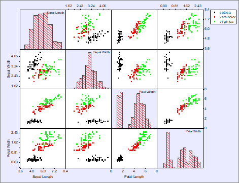
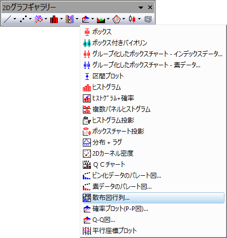

散布図行列グラフ
Scatter-Matrix
散布図行列は、複数の変数の散布図を対として行列形式で表したものです。変数に相関性があるか、相関が正か負かを決定するのに使用できます。
- 
必要なデータ
ワークシートから少なくとも2つの列、あるいは、その部分領域が必要です。
グラフ作成
散布図行列を作成するには
- ワークシートから少なくとも2つの列、あるいは、その部分領域が必要です。
- メニューからと選択します。
- または、
- 2Dグラフギャラリーツールバーの散布図行列ボタンをクリックします。
選択された各列または範囲に対して選択された各列または範囲が散布図としてプロットされます。全レイヤはグラフ内の行列として表現されます。
- 
テンプレート
BOXMATRIX.OTP (Originのプログラムフォルダにインストールされています。)
Notes
- Note：N個のデータセットまたは範囲を選択すると、 N^2-N個のグラフが作成されます。多数のデータセットまたは範囲を選択すると、計算時間が劇的に長くなり、グラフが小さくなります。
- 散布図行列はplot_matrixダイアログボックスを使って作成されます。散布図行列の作成や編集についての情報は、散布図行列を参照してください。
- 散布行列を作成または修正するときには、線形近似を実行し、調整されたR二乗および、またはピアソンのr統計量をScatterMatrixStatsNという名前の新しいワークシートに出力するオプションがあります。さらに、統計値は散布図の各プロットにテキストラベルとして貼り付けられます。
詳しくは、詳しくは、 散布図行列 をご参照ください。